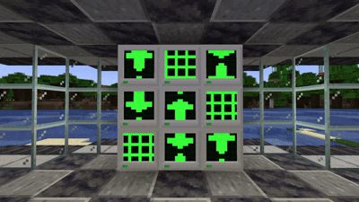

IO documentation
Introductions
The 'Projector' API allows for programmatic control of a small binary graphics system rendered onto the screen on the computer's model in game, allowing anything from small blinking cursors to show signs of life to complex displays to convey information or style!

Lookup table
| clear() | Wipes the display buffer |
| draw() | Updates the display |
| getSize() | Gets the display's size |
| drawPixel(x, y) | Draws a pixel to the display buffer |
| drawLine(x1, y1, x2, y2) | Draws a line to the display buffer |
| drawRec(x1, y1, x2, y2) | Draws a rectangle to the display buffer |
Functions in detail
clear()
Clears the display buffer
Parameters: None Returns: Nonedraw()
Updates the display to match the display buffer
Parameters: None Returns: NonegetSize()
Gets the size of the display
Parameters: None Returns: Int, IntdrawPixel(x, y)
Draws a pixel to the display buffer
Parameters: X[Integer], Y[Integer] Returns: NonedrawLine(x1, y1, x2, y2)
Draws a line between the two points to the display buffer
Parameters: X1[Integer], Y1[Integer], X2[Integer], Y2[Integer] Returns: NonedrawRec(x1, y1, x2, y2)
Draws a solid rectangle between the two points to the display buffer
Parameters: X1[Integer], Y1[Integer], X2[Integer], Y2[Integer] Returns: None